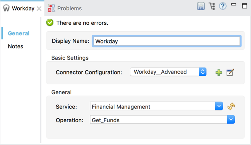

Workday Connector
MuleSoft maintains this connector under the Select support policy.
The Anypoint Connector for Workday is a closed source Enterprise connector that provides a connection between Workday and third party software. It implements the Workday v28.0 API modules, and interfaces with the Human Capital Management, Financial Management, Student, and System web services. The Workday connector is a SOAP-based connector developed with Anypoint Connector DevKit 3.9.0.
Read this user guide to understand how to set up and configure a basic flow using the connector. Track feature additions, compatibility, limitations, and API version updates with each release of the connector using the Workday Connector Release Notes. Review the connector operations and functionality using the Technical Reference alongside the demo applications or the Workday Services documentation.
Migration Guide: Workday Connector 6.0 and above Migration Guide
Release Notes: Workday Connector Release Notes
About Prerequisites
To use this connector, you need:
-
A Workday instance with the necessary permissions.
-
A set of valid credentials, including username, password, tenant name, and host name (optional). The service endpoints are automatically generated based on the credentials.
-
A MuleSoft Enterprise License.
This document assumes that you are familiar with Mule, Anypoint Connectors, and Anypoint Studio Essentials. To increase your familiarity with Studio, consider completing one or more Basic Studio Tutorials. This page assumes you understand Mule Concepts, Elements in a Mule Flow, and Global Elements.
Here you can find implementation examples within the context of the Anypoint Studio graphical user interface, and also configuration details for doing the same in the XML Editor.
About Compatibility
Workday WSDL connector is compatible with:
| Application/Service | Version |
|---|---|
Mule Runtime |
EE 3.7.0 or later |
Anypoint Studio |
5.2 or later |
Workday API |
v28.0 |
Java |
JDK 7 |
To Install the Workday Connector
You can install a connector in Anypoint Studio using the instructions in Installing a Connector from Anypoint Exchange. However, to use the Workday connector in a production environment, you must have an Enterprise license to use Mule. Contact the MuleSoft Sales Team to obtain either of these. Read more about Installing an Enterprise License.
To Upgrade from an Older Version
-
Uninstall the previous Workday Connector.
-
Install the Workday connector as described in the previous section.
-
Make sure you have updated the Maven dependencies correctly:
Connector Version From To Version until 4.0.1
<groupId>org.mule.modules</groupId>
<artifactId>mule-module-workday</artifactId><groupId>org.mule.modules</groupId>
<artifactId>workday-connector</artifactId>Versions 4.0.1 to 6.0 or above
<groupId>org.mule.modules</groupId>
<artifactId>mule-module-workday-<wd_module_name></artifactId><groupId>org.mule.modules</groupId>
<artifactId>workday-connector</artifactId> -
It is important to update the flows to:
-
Update the existing data mappings
-
Replace the old Workday connector with the newer connector
-
Replace the phased out or deprecated operations
-
-
Make the following changes to the namespace:
From To Namespace:
xmlns:wd-staffing="http://www.mulesoft.org/schema/mule/wd-staffing"
Schema Location:
http://www.mulesoft.org/schema/mule/wd-staffing
http://www.mulesoft.org/schema/mule/wd-staffing/2.0/mule-wd-<wd_module_name>.xsdNamespace:
xmlns:wd-connector="http://www.mulesoft.org/schema/mule/wd-connector"
Schema Location:
http://www.mulesoft.org/schema/mule/wd-connector
http://www.mulesoft.org/schema/mule/wd-connector/current/mule-wd-connector.xsd
To Create a New Project
To use the Workday connector 8.2 in a Mule application project:
-
In Anypoint Studio, create a new Mule project. File > New > Mule Project.
-
Enter a name for your new project and leave the remaining options with their default values.
-
If you plan to use Git, select Create a .gitignore file for the project with default ignores for Studio Projects, and then click Next.
-
Click Finish to create the project.
-
Search for
httpand drag the HTTP connector to the canvas. Click the green plus symbol next to the Connector Configuration field. Accept all default settings and click OK. -
Search for
workdayand drag the Workday connector to the canvas. Click the green plus symbol next to the Connector Configuration field and choose either Basic Configuration or Advanced Configuration.
Basic Configuration
The Basic configuration enables access to basic authentication of username and password.
| Field | Description |
|---|---|
Name |
Enter a name for the configuration to reference it later |
Username |
Enter the username to log in to Workday. |
Password |
Enter the corresponding password. |
Tenant Name |
Enter the Workday Tenant ID. It usually has the suffix "pt_1" appended to it, such as "acme_pt1". |
Host Name |
Enter the host name of one of the Workday Cloud Servers. By default, the connector sets the host name to |
Test Connectivity |
Click the down-arrow to select a Workday table to test access for. Possible values are: Absence_Management (Default), Academic_Advising, Academic_Foundation, Admissions, Benefits_Administration, Campus_Engagement, Cash_Management, Compensation, Compensation_Review, Dynamic_Document_Generation, External_Integrations, Financial_Aid, Financial_Management, Human_Resources, Identity_Management, Integrations, Inventory, Notification, Payroll, Payroll_CAN, Payroll_FRA, Payroll_GBR, Payroll_Interface, Performance_Management, Professional_Services_Automation, Recruiting, Resource_Management, Revenue_Management, Settlement_Services, Staffing, Student_Finance, Student_Records, Student_Recruiting, Talent, Tenant_Data_Translation, Time_Tracking, and Workforce_Planning. |
Test Connection |
Ensure your Workday access credentials work correctly to their server. |
Notes:
-
In the Global Element Properties image, the placeholder values refer to a configuration file in the
srcfolder of your project. See Configuring Properties. Either enter your credentials in the global configuration properties, or reference a configuration file containing these values. -
For simpler maintenance and better re-usability of your project, Mule recommends that you use a configuration file. Keeping these values in a separate file is useful if you need to deploy to different environments, such as production, development, and QA, where your access credentials differ. See Deploying to Multiple Environments for instructions on how to manage this.
Advanced Configuration
The advanced configuration supports a user-defined HTTP Request Configuration that lets you adjust both the Connection Idle Timeout and Response Timeout, and set up a proxy connection.
Advanced fields:
| Field | Description |
|---|---|
Name |
Enter a name of the configuration to reference it later. |
Requester Config |
Enter an HTTP Requester configuration. |
Username |
Enter the username to log in to Workday. |
Password |
Enter the corresponding password. |
Tenant Name |
Enter the Workday Tenant ID. It is usually appended with pt_1, such as "acme_pt1". |
Host Name |
Enter the host name of one of the Workday Cloud Servers. By default, the connector sets the host name to |
Test Connectivity |
Click the down-arrow to select a Workday table to test access for. Possible values are: Absence_Management (Default), Academic_Advising, Academic_Foundation, Admissions, Benefits_Administration, Campus_Engagement, Cash_Management, Compensation, Compensation_Review, Dynamic_Document_Generation, External_Integrations, Financial_Aid, Financial_Management, Human_Resources, Identity_Management, Integrations, Inventory, Notification, Payroll, Payroll_CAN, Payroll_FRA, Payroll_GBR, Payroll_Interface, Performance_Management, Professional_Services_Automation, Recruiting, Resource_Management, Revenue_Management, Settlement_Services, Staffing, Student_Finance, Student_Records, Student_Recruiting, Talent, Tenant_Data_Translation, Time_Tracking, and Workforce_Planning. |
Test Connection |
Ensure your Workday access credentials work correctly to their server. |
Keep the Pooling Profile and the Reconnection tabs with their default entries.
To Configure from the XML Code
Ensure you have included the following namespace in your configuration file:
xmlns:wd-connector="http://www.mulesoft.org/schema/mule/wd-connector"
Create a global Workday configuration outside and above your flows using the following global configuration code:
<wd-connector:config name="Workday_Connector__Configuration" username="${workday.username}" password="${workday.password}" tenantName="${workday.tenantname}" doc:name="Workday Connector: Configuration"/>Using the Connector
The Workday connector is an operation-based connector, which means that when you add the connector to your flow, you need to select a Workday service and an operation for the connector to perform. The Workday connector supports the following Workday APIs: Human Resource, Financials, Student, and System.
Adding Workday Connector 8.0 to a Flow
-
Create a new Mule project in Anypoint Studio.
-
Drag the Workday Connector onto the canvas, then select it to open the properties editor.
-
Configure the connector’s parameters:
Field Description Display Name
Enter a unique label for the connector in your application.
Connector Configuration
Select a global Workday connector configuration from the dropdown or add a new one by clicking the green plus sign.
Service
Select a Workday service, such as Financial Management.
Operation
Select an operation to perform in the service, such as Put_Fund. See Appendix: Operation Types for possible operations.
 -
Save your project.
Example: Add a Fund to Financial Management
-
Create a Mule project in your Anypoint Studio.
-
Drag an HTTP Listener into the canvas, then select it to open the properties editor console.
-
In General Settings, click the green plus sign next to the Connector Configuration field.
-
Configure the HTTP parameters for Port 8081 and Host 0.0.0.0.
-
Add a Set Payload transformer after the HTTP connector, and set the value to:
`#[['FundName':' I.M.F' , 'FundTypeID' : ' FUND_TYPE-6-3']]"`
-
Drag the Workday Connector 8.0 into the flow.
-
Click the green plus sign next to the Connector Configuration field and select Workday: Basic as the "global type"
-
Configure the Workday global element, using credentials stored in a properties file, for example
src/main/resources/credentials.properties:For more information on setting credentials inside a properties file, see Properties Files.
-
Back in the properties editor of the connector, configure the remaining parameters:
Field Description Display Name
Enter a unique label for the connector in your application.
Connector Configuration
Select a global Workday connector 8.0 element from the dropdown.
Service
Select a Workday service, such as Financial Management.
Operation
Select an operation to perform in the service, such as Put_Fund. See Appendix: Operation Types for available operations.
-
Drag a Transform Message component into the flow before the Workday Connector. This component includes a DataWeave code editor you can use to define mappings between two components of your flow.
-
Click the Transform Message component and modify the DataWeave content so it matches the code below:
%dw 1.0 %output application/xml %namespace ns0 urn:com.workday/bsvc --- { ns0#Put_Fund_Request @(ns0#Add_Only: true , ns0#version: "v28.0"): { ns0#Fund_Data: { ns0#Fund_Name: payload.FundName, ns0#Fund_Type_Reference: { ns0#ID @(ns0#type: "Fund_Type_ID"): payload.FundTypeID } } } } -
Save and run the project as a Mule Application. Then enter http://0.0.0.0:8081 in your browser and wait for the result. You should receive an XML response that looks like:
<wd:Put_Fund_Response xmlns:wd="urn:com.workday/bsvc" wd:version="v28.0"> <wd:Fund_Reference wd:Descriptor="I.M.F"> <wd:ID wd:type="WID">THE_WID_ID_NUMBER</wd:ID> <wd:ID wd:type="Fund_ID">FUND-6-399</wd:ID> </wd:Fund_Reference> </wd:Put_Fund_Response>
To Configure the Example Using XML
For this code to work in Anypoint Studio, you must provide the credentials for the Workday instance. You can either replace the variables with their values in the code, or you can add the credentials into the file named mule-app.properties in the src/main/app folder to provide the values for each variable, or as below, using a file called credentials.properties stored at src/main/resources.
<?xml version="1.0" encoding="UTF-8"?>
<mule xmlns:context="http://www.springframework.org/schema/context"
xmlns:dw="http://www.mulesoft.org/schema/mule/ee/dw"
xmlns:http="http://www.mulesoft.org/schema/mule/http" xmlns:wd-connector="http://www.mulesoft.org/schema/mule/wd-connector" xmlns="http://www.mulesoft.org/schema/mule/core" xmlns:doc="http://www.mulesoft.org/schema/mule/documentation"
xmlns:spring="http://www.springframework.org/schema/beans"
xmlns:xsi="http://www.w3.org/2001/XMLSchema-instance"
xsi:schemaLocation="http://www.springframework.org/schema/context http://www.springframework.org/schema/context/spring-context-current.xsd
http://www.mulesoft.org/schema/mule/ee/dw http://www.mulesoft.org/schema/mule/ee/dw/current/dw.xsd
http://www.springframework.org/schema/beans http://www.springframework.org/schema/beans/spring-beans-current.xsd
http://www.mulesoft.org/schema/mule/core http://www.mulesoft.org/schema/mule/core/current/mule.xsd
http://www.mulesoft.org/schema/mule/wd-connector http://www.mulesoft.org/schema/mule/wd-connector/current/mule-wd-connector.xsd
http://www.mulesoft.org/schema/mule/http http://www.mulesoft.org/schema/mule/http/current/mule-http.xsd">
<context:property-placeholder location="credentials.properties"/>
<http:listener-config name="HTTP_Listener_Configuration" host="0.0.0.0" port="8081" doc:name="HTTP Listener Configuration"/>
<wd-connector:config name="Workday_Connector_Configuration" username="${workday.username}" password="${workday.password}" tenantName="${workday.tenantname}" doc:name="Workday Connector: Configuration"/>
<flow name="demoFlow">
<http:listener config-ref="HTTP_Listener_Configuration" path="/" doc:name="HTTP"/>
<set-payload value="#[['FundName':' I.M.F' , 'FundTypeID' : ' FUND_TYPE-6-3']]" doc:name="Set Payload"/>
<dw:transform-message doc:name="Transform Message">
<dw:set-payload><![CDATA[%dw 1.0
%output application/xml
%namespace ns0 urn:com.workday/bsvc
---
{
ns0#Put_Fund_Request @(ns0#Add_Only: true , ns0#version: "v28.0"): {
ns0#Fund_Data: {
ns0#Fund_Name: payload.FundName,
ns0#Fund_Type_Reference: {
ns0#ID @(ns0#type: "Fund_Type_ID"): payload.FundTypeID
}
}
}
}]]></dw:set-payload>
</dw:transform-message>
<wd-connector:invoke config-ref="Workday_Connector_Configuration" type="Financial_Management||Put_Fund" doc:name="Workday Connector"/>
</flow>
</mule>Appendix: Operation Types
The following operations are available:
Cancel_Accounting_Journal
Get_1042-S_Income_Codes
Get_1099_MISC_Adjustments
Get_1099_MISCs
Get_Account_Posting_Rule_Sets
Get_Account_Sets
Get_Account_Sets_Without_Dependencies
Get_Alternate_Account_Set_Mappings
Get_Award_Personnel_Responsibilities
Get_Basic_Customers
Get_Basic_Gifts
Get_Basic_Grants
Get_Basic_Projects
Get_Basic_Sales_Items
Get_Basic_Suppliers
Get_Beginning_Balance_Journals
Get_Beginning_Balance_Translation_Amounts
Get_Budget_Fringe_Rate_Tables
Get_Business_Entity_Contacts
Get_Business_Plan_Details
Get_Business_Unit_Hierarchies
Get_Business_Units
Get_Companies
Get_Company_1099_MISC_Oata
Get_Cost_Centers
Get_Currency_Conversion_Rates
Get_Currency_Rate_Types
Get_Custom_Validation_Rules
Get_Custom_Validation_Rules_without_Dependencies
Get_Custom_Worktags
Get_Customer_Categories
Get_Default_Values_for_Worktags
Get_Effort_Certification_Change_Reason_Codes
Get_Effort_Certification_Eligibility_Rules
Get_Effort_Certification_Eligibility_Rules_without_Dependencies
Get_Effort_Certification_Texts
Get_Effort_Certification_Types
Get_Escheatment_Items
Get_Fund_Hierarchies
Get_Fund_Types
Get_Funding_Source_Rules
Get_Funding_Sources
Get_Funds
Get_Gift_Hierarchies
Get_Gifts
Get_Grant_Hierarchies
Get_Grants
Get_Headcount_Plan
Get_Integration_Worktag_Mapping_Source_Systems
Get_Integration_Worktag_Mappings
Get_Intercompany_Profiles
Get_Investors
Get_Journal_Sources
Get_Journals
Get_Ledger_Account_Summaries
Get_Loan_Investor_Types
Get_Loan_Referral_Types
Get_Loans
Get_Object_Class_Sets
Get_Oefault_Funding_Sources
Get_Organizations
Get_Payment_Messages
Get_Payment_Terms
Get_Payment_Types
Get_Payments
Get_Position_Budgets
Get_Program_Hierarchies
Get_Programs
Get_Proposal_Grants
Get_Receivable_Writeoff_Categories
Get_Recurring_Journal_Templates
Get_Regions
Get_Related_Worktags_for_Worktags
Get_Resource_Categories
Get_Revenue_Categories
Get_Revenue_Category_Hierarchies
Get_Search_Settings
Get_Spend_Category_Hierarchies
Get_Spend_Restrictions
Get_Statistic_Definitions
Get_Statistics
Get_Supplier_Categories
Get_Surveys
Get_Suspense_Account_Rules
Get_Tax_Applicabilities
Get_Tax_Authorities
Get_Tax_Categories
Get_Tax_Rule_Exception_Groups
Get_Transaction_Tax_Codes
Get_Transaction_Tax_ltem_Groups
Get_Transaction_Tax_Rates
Get_Transaction_Tax_Statuses
Get_vAT_Groups
Get_Withholding_Tax_Codes
Get_Withholding_Tax_Item_Groups
Get_Withholding_Tax_Rates
Get_Withholding_Tax_Status
Get_Workday_Companies
Import_Accounting_Journal
Import_Budget
Import_Budget_Amendment
Import_Currency_Conversion_Rates
Import_Headcount_Plan
Import_Position_Budget
Import_Statistic
Put_1042-S_Income_Code
Put_Account_Posting_Rule_Set
Put_Account_Set
Put_Alternate_Account_Set_Mapping
Put_Award_Personnel_Responsibility
Put_Basic_Customer
Put_Basic_Gift
Put_Basic_Grant
Put_Basic_Project
Put_Basic_Sales_Item
Put_Basic_Supplier
Put_Beginning_Balance_Journal
Put_Beginning_Balance_Translation_Amounts
Put_Business_Entity_Contact
Put_Business_Unit
Put_Business_Unit_Hierarchy
Put_Contingent_Worker_Tax_Authority_Form_Type
Put_Cost_Center
Put_Currency_Conversion_Rate
Put_Currency_Conversion_Rates
Put_Currency_Rate_Type
Put_Custom_Validation_Rule
Put_Custom_Worktag
Put_Customer_Category
Put_Defau1t_Funding_Source
Put_Defau1t_Values_for_Worktag
Put_Effort_Certification_Change_Reason_Code
Put_Effort_Certification_Type
Put_Effort_Certifying_Text
Put_Escheatable_Payment_Notification_Date
Put_Fringe_Rate_Table
Put_Fund
Put_Fund_Hierarchy
Put_Fund_Type
Put_Funding_Source
Put_Funding_Source_Rule
Put_Gift_Hierarchy
Put_Gift_Secured_Attachment
Put_Grant
Put_Grant_Hierarchy
Put_Integration_Worktag_Mapping
Put_Integration_Worktag_Mapping_Source_System
Put_Intercompany_Profile
Put_Investor
Put_Journal_Source
Put_Ledger_Account_Summary
Put_Loan
Put_Loan_Investor_Type
Put_Loan_Referral_Type
Put_Object_Class_Set
Put_Payment_Term
Put_Payment_Type
Put_Program
Put_Program_Hierarchy
Put_Proposal_Grant
Put_Receivable_Writeoff_Category
Put_Recurring_Journal_Template
Put_Related_Worktags_for_Worktag
Put_Resource_Category
Put_Revenue_Category
Put_Revenue_Category_Hierarchy
Put_Search_Settings
Put_Spend_Category_Hierarchy
Put_Spend_Restriction
Put_Statistic
Put_Statistic_Definition
Put_Supplier_Category
Put_Survey
Put_Suspense_Account_Rule
Put_Tax_Applicability
Put_Tax_Authority
Put_Tax_Category
Put_Tax_Rule_Exception_Group
Put_Third_Party_Calculated_Tax_Information
Put_Transaction_Tax_Code
Put_Transaction_Tax_Item_Group
Put_Transaction_Tax_Rate
Put_Transaction_Tax_Status
Put_VAT Group
Put_Withholding_Tax_Code
Put_Withholding_Tax_Item_Group
Put_Withholding_Tax_Rate
Put_Withholding_Tax_Status
Submit_1099_MISC_Adjustment
Submit_Accounting_Journal
Submit_Escheatment_Items
Submit_Gift
Unpost_Accounting_JournalSee Also
-
To view the latest changes to the Workday connector, read the Workday Connector Release Notes
-
Learn more about working with Anypoint Connectors.
-
For more information on Workday v28.0 API, refer to the Workday API documentation.
-
Workday v28.0 Release Notes (Requires Workday Community login).